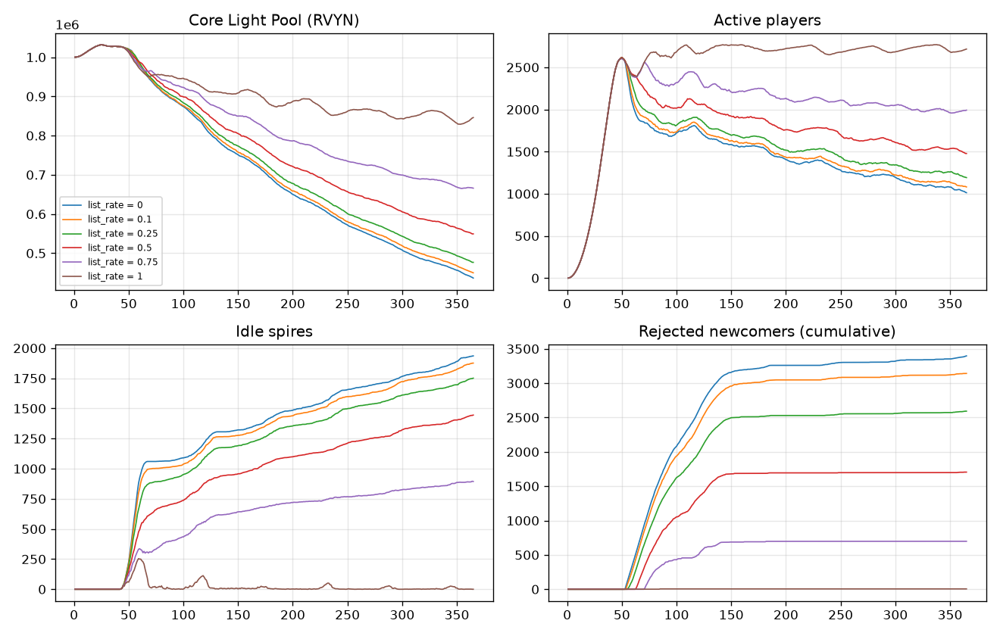
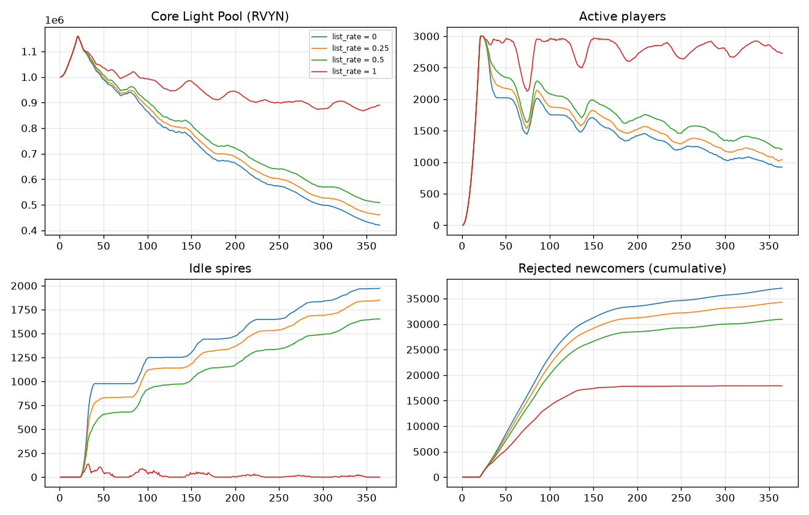

tools/lightdive-econ/ · 合約未經審計、未部署 · 結果是在假設下的情況，不是預測，也不是收益保證lightdive_sim/market.py），取代第一輪「所有離開的人都以召喚價八成賣出」的樂觀假設：
| 上架率 | 閒置光塔 | 被擋的新玩家（累計） | 活躍玩家 | 核光池 | 二手交易 | 賣不掉而放棄 | 全體領回／投入 | 玩家報酬中位數 | 報酬 ≥ 1 |
|---|---|---|---|---|---|---|---|---|---|
| 0% | 1,928 | 3,368 | 1,023 | 439,195 | 0 | 0 | 0.96 | 0.88 | 31% |
| 10% | 1,870 | 3,090 | 1,079 | 453,444 | 961 | 0 | 0.94 | 0.86 | 29% |
| 25% | 1,746 | 2,572 | 1,198 | 478,970 | 2,508 | 0 | 0.91 | 0.85 | 26% |
| 50% | 1,442 | 1,708 | 1,485 | 550,380 | 5,249 | 0 | 0.85 | 0.82 | 19% |
| 75% | 909 | 673 | 1,976 | 663,508 | 8,002 | 0 | 0.78 | 0.78 | 14% |
| 100% | 2 | 20 | 2,704 | 840,260 | 9,609 | 0 | 0.72 | 0.74 | 11% |
3 組種子之間的差距很小（例如上架率 50% 時核光池 545,551～556,289），結論不受種子影響。完整表格含範圍：reports/sweep-market-c/sweep.md。舊模擬（sim-v3）的基準核光池約 98 萬、全體領回／投入 0.71，只有在上架率接近 100% 時才接近。

| 上架率 | 閒置光塔 | 被擋的新玩家（累計） | 活躍玩家 | 核光池 | 二手交易 | 全體領回／投入 | 玩家報酬中位數 | 報酬 ≥ 1 |
|---|---|---|---|---|---|---|---|---|
| 0% | 1,971 | 37,068 | 924 | 423,845 | 0 | 0.96 | 0.87 | 31% |
| 25% | 1,858 | 34,400 | 1,029 | 458,987 | 3,211 | 0.91 | 0.85 | 27% |
| 50% | 1,662 | 30,955 | 1,207 | 509,136 | 7,471 | 0.86 | 0.83 | 21% |
| 100% | 0 | 17,926 | 2,722 | 889,943 | 25,191 | 0.67 | 0.73 | 8% |
上架率 100% 時閒置光塔是 0，但仍有約 1.8 萬人進不來：3,000 座光塔全部有人在用。這是上限的稀有度本身，不是閒置卡造成的。要不要因此調整上限，是另一個決定，這次不需要做。

模擬顯示買家不缺，缺的是賣家「記得上架」。以下都是網站／遊戲介面的工作，可以在測試網階段做：
| # | 做法 | 說明 |
|---|---|---|
| 1 | 「閒置的卡」提醒 | 錢包裡有不在任何隊伍、沒停泊的卡時，在遊戲首頁顯示數量，旁邊放「到市集上架」按鈕。只顯示事實，不顯示「划算」之類的試算（遵守市集介面規則）。 |
| 2 | 解散隊伍時順便上架 | 玩家拆掉隊伍或卡用完時，詢問其他卡要不要上架，一步一步引導。 |
| 3 | 一次上架多張 | 目前市集合約一次只能上架一張（list(id, price)），多張卡要簽多次。介面可以排隊依序簽；如果要「一次簽名上架多張」就要在合約加一個批次函式，這屬於合約修改，需要你另外同意，現在不做。 |
| 4 | 公開上限使用情況 | 在透明度頁面顯示三種卡的「存在數量／在隊伍中的數量」，讓大家看到有多少卡閒置。 |
| 5 | 上線後實際量測 | 上架率是這次最重要的未知數。測試網和上線初期可以從鏈上事件算出真實的上架率，再用這個模擬器重跑。 |
重現方式：.venv/Scripts/python -m lightdive_sim sweep market-c --key market.order_book.list_rate --values 0,0.1,0.25,0.5,0.75,1 --seeds 3（爆紅：market-c-boom，--values 0,0.25,0.5,1 --seeds 2）。測試紀錄：reports/decision-c/pytest.txt。本報告由 RovynCore 開發團隊整理，2026-10-10。